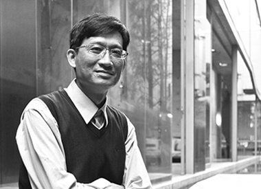

公司簡介
COMPANY HISTORY公司沿革
一步一腳印，朝著夢想向前進
想要立築大地的意志，執著熱情！
啟宇的成長，來自大地的恩賜，來自業主的信賴，也來自同仁們盡其所能的用心！
未來的啟宇，仍將堅定步伐，走向永續經營的道路！
-
第七次增資：增資為新台幣貳億元整
-
第六次增資：增資為新台幣壹億伍仟萬元整
-
第五次增資：增資為新台幣壹億元整
-
第四次增資：增資為新台幣伍仟萬元整
-
第三次增資：增資為新台幣參仟貳百伍拾萬元整
-
成立創健建設：資本額為新台幣捌仟萬元整
-
晉陞為甲級營造廠
營造業登記證號-綜甲M字第A09520-000號 -
第二次增資：增資為新台幣貳仟貳佰伍拾萬元整
並辦理晉陞為甲級營造廠 -
連續三年營造評鑑第一級
(圖：95~97年營造業評鑑證書) -
晉陞為乙級營造廠
第一次增資：增資為新台幣壹仟伍佰萬元整 -
正式成立為丙級營造廠
資本額：新台幣參佰萬元整以承攬各項土木建築
CHEER YOU GROUP啟宇集團
- 啟宇營造工程股份有限公司
Cheer You Construction Co.,Ltd. - 創健建設股份有限公司
Chuang Jian Building Co.,Ltd. - 宇創開發有限公司
You Jian Development Co., Ltd. - 啟宇營造(泰國)股份有限公司
Cheer You Construction (Thailand) Co.,Ltd.
CERTIFICATE OF
INCORPORATION公司證照

公司證照
綜合營造登記證書-
公司證照
綜合營造登記證書 
公司證照
甲等會員證書
-
榮譽晉升
97年甲級營造廠 -
榮譽晉升
96年甲級營造廠 -
榮譽晉升
95年甲級營造廠
營造評鑑連續三年第一級升等為甲級營造廠
OPERATING TEAM經營團隊
尊重專業、協同合作、深厚信賴
啟宇在實踐中不斷尋找理念相合的夥伴，厚實團隊的專業與素養，
彼此相互扶持、學習成長！因為旗鼓相當的專業堅持與經驗價值，
所以有最好的默契，共同展現出最優勢的競爭力！
-
李 慕麟
GENERAL MANAGER
總經理學 歷： 逢甲大學水利工程學系畢業 經 歷： 逢甲大學土木水利工程研究所研究助理
德寶營造/ 嘉南一景四棟22層集合住宅.中國國際商業銀行員林分行
北屯國家廣場22層集合住宅
省住都局/ 中投公路CT010標烏溪橋預力RC結構
證 照： 品管工程師.勞工安全衛生管理員 -
黃 彬煌
ENGINEERING TECHNICIAN
主任技師學 歷： 逢甲大學建築學系畢業 經 歷： 由鉅建設.聖家族.聖美村.八大家.合造興.明煌營造主任技師
宇興建設/ 上海國際華城.彰化健康里鄰.公園麗景.潮州和風鄉園
建研建設/ 荷風名廬.台鳳大炁四方設計大展.豐原成功金店
國唐建設/ 國唐綠園道.台灣國寶科技大樓.湖水岸藝術街
亞洲大學/ 教學大樓.宿舍大樓.動力中心.校園景觀
成中恆營造/ 高鐵台中車站.文心稅捐處大樓.中正公園停車場.彰濱
秀傳醫院.南投啟智教養院.逢甲大學體育館.國泰建設雅苑.台北萬
華運動中心.鼎泰三三行館.麻豆第一銀行.巨匠東海儷堡.逢甲大學
學思樓.逢甲文華創意中心.嘉義大同技術學院教學大樓.竹北佐多
稻子.元均枕草子.天心工業廠辦.南瀛天文館.銳豐四季花園
證 照： 建築師.室內裝修專業技術人員.施工安全評估人員.消防設備師 - 
王 嘉儀
DIRECTOR
協理學 歷： 中原大學土木水利工程學系畢業 經 歷： 德寶營造/ 嘉南一景四棟22層集合住宅.嘉義聯統忠孝.聯統文化集
合住宅.台中市陸裝光華忠勤二十二棟眷村改建.彰化觀天下集合住宅
義峰營造/ 三采市政天地.三采市政新境.英才中華電信大樓
中鼎工程顧問/ 中二高C318標.C325A標高速公路新建工程
證 照： 勞工安全衛生管理員 -
吳 智祥
MANAGER
總經理學 歷： 屏東農業專科學校農業土木工程科畢業 經 歷： 德寶營造/ 省政府旅遊局辦公廳舍
省住都局/ 彰化市建國路高架橋.彰化天祥路2-4號道路
和美鎮信義.愛華道路.埔心鄉三號道路.埔鹽雨水下水道工程
花壇雨水下水道工程
健峰營造/ 濁水溪番仔寮堤岸工程
證 照： 品管工程師.工地主任 -
陳 金泉
MANAGER
總經理學 歷： 國立成功大學土木研究所 經 歷： 德寶營造/ 國泰世華銀行台南分行.長榮台糖觀光飯店.東方國
宅4棟集合住宅.嘉義聯統忠孝大樓集合住宅.台南機場跑道工程
證 照： 土木技師.品管工程師.工地主任.勞安安全衛生管理員.施工安全評估人員 -
五十嵐 信夫
DESIGN CONSULTANT
設計顧問學 歷： 1998 株式會社 一級建築士事務所 FOREST-SHIP 經 歷： 2003 高而潘建築師事務所(台灣)
廣興國小興建工程/ 遠東建築921校園重建特別獎(第三屆)入圍獎
青森縣大畑町中央保育所/ 日本建築學會 東北建築獎得獎
山梨縣甲府市社區營造/ 學會競圖比賽(日本建築學會)優秀獎
高屏溪生態親水公園規畫設計/ 建築園冶獎.技優臮福獎
高屏溪自行車道第三期工程/ 建築園冶獎 (第十四屆)
新北市直潭社區公共建設工程/ 第一屆新北市都市設計大賞 得獎
阿里山高山植物園管理棟/ 行政院農委會優良農建工程獎
日本不動產學會業績獎/ 阿里山国家森林遊樂區『天空の森林理想鄉』
沼平車站改建工程/ 第13屆公共工程金質獎.行政院農委會優良農
建工程獎.阿里山開發案日本不動產學會實績獎
竹崎鹿滿客家文化菸樓風貌再現工程/ 第二十屆2014年建築園冶獎
證 照： 台北市 迪化街景觀改善設計
高雄縣 高屏溪流域自行車道系統計畫
嘉義縣 阿里山國家森林遊樂區建築暨景觀整體規劃
台中縣 谷關溫泉區街景人行步道建置工程
嘉義縣 沼平車站改建工程
ORGANIZATIONAL
STRUCTURE組織架構
員工是最重要的資產，組織是最關鍵的核心
擁有優良素質與健康體能的員工，公司才有活力與競爭力。
啟宇擁有完整的教育課程，讓新人透過放樣測量、施工估算、安全衛生、工地施工標準、甚至自行車運動技巧等訓練，
不只讓公司的人力素質再提升，更維繫起緊密的企業向心力，保持公司的專業競爭優勢。
PROFESSIONAL專業人才
集結有理想的建築人，實現有夢想的精工藝
80%為工程師人員，專業證照總計五十張，是工程品質的最佳保證。

SUSTAINABLE
OPERATION永續經營
企業總部：讓服務更永續
新的企業總部，擁有更多功能的會議空間，作為與業主、客戶、溝通的場所；
也為員工保留更大的生活、交誼的場地，期能更緊密凝聚團隊向心力，促成內部間研發、設計的互動，提供更永續而穩定的經營管理和後勤支援。
「有家，心頭定」！這座屬於啟宇營造的「家」，也將是全體夥伴們齊心創造永續服務的全新起點，誠摯歡迎 您的蒞臨指教！
啟宇總部辦公大樓 (台中)
GREEN
INHERITANCE綠色資產
樹木銀行：把景觀作到最好
都將適宜的落羽松、楓香、樟樹、大型桂花、大七里香等之樹苗與樹種，預先移植至特別購置、悉心涵養的千坪土地，
使每件個案趨近完工時，可以在最短時間內移植，完成景觀造境作業。
啟宇相信，樹是人最好的朋友，跟人一樣需要被照顧、被栽培，我們願意用心，為樹、為人、為地球，貢獻一己之力。
 loading
loading